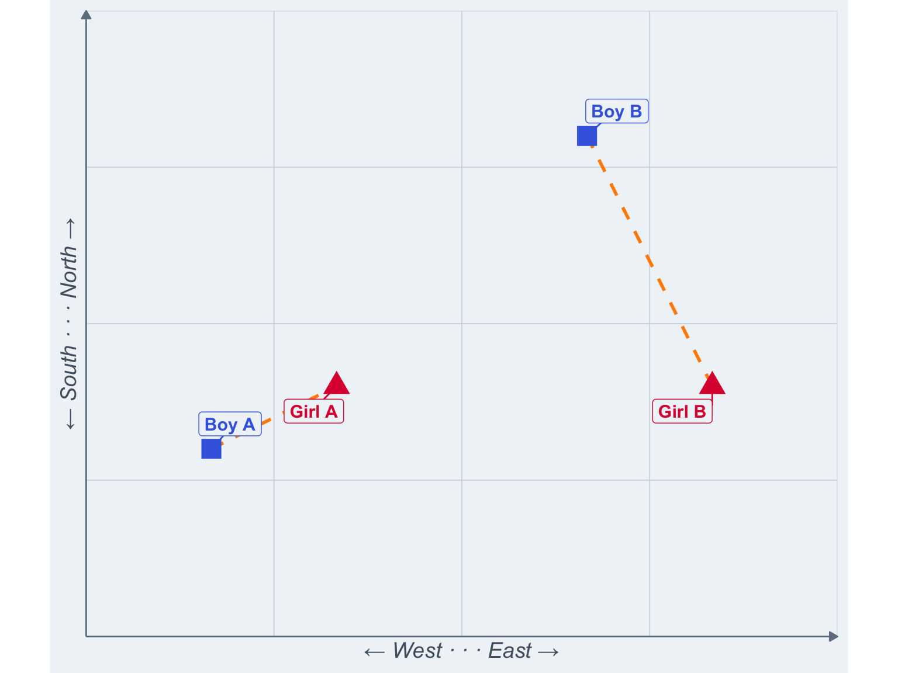
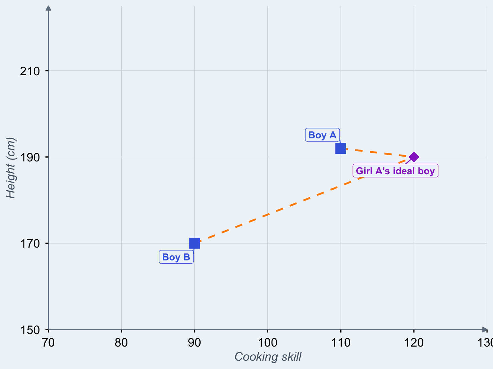
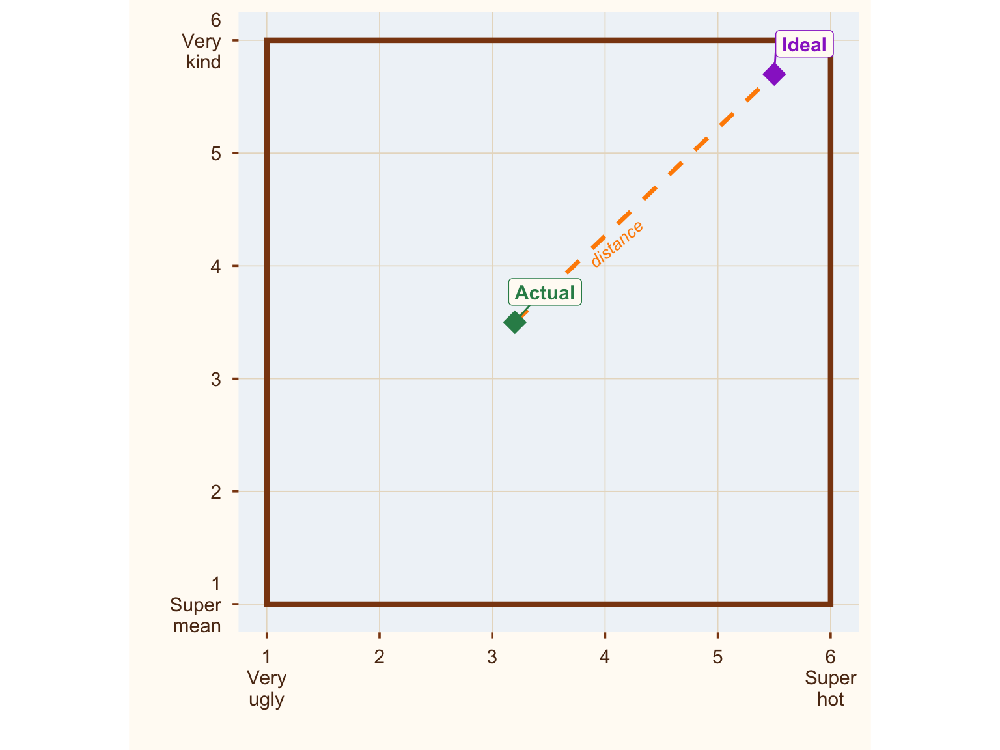
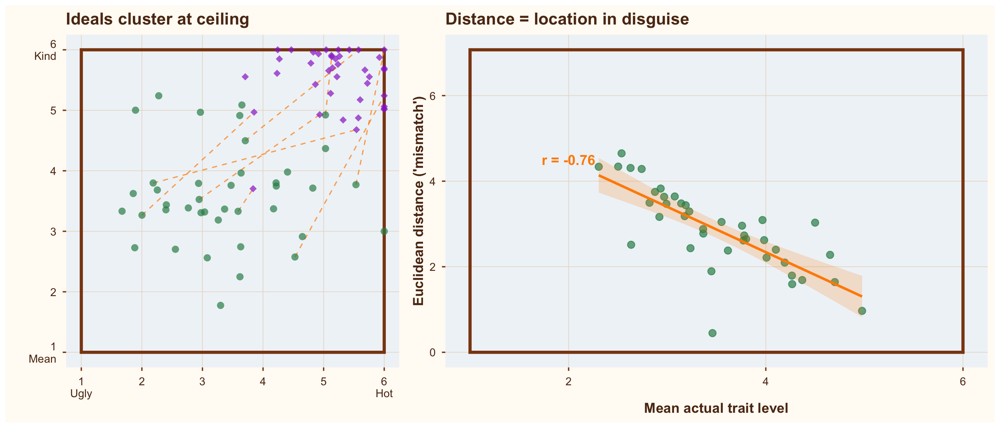
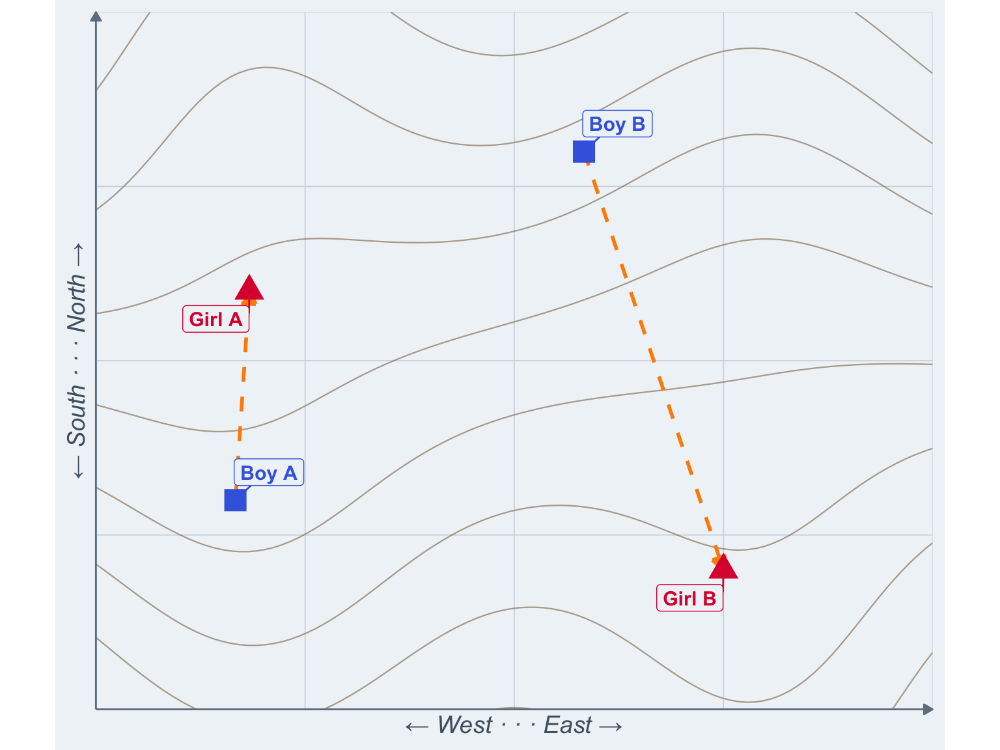
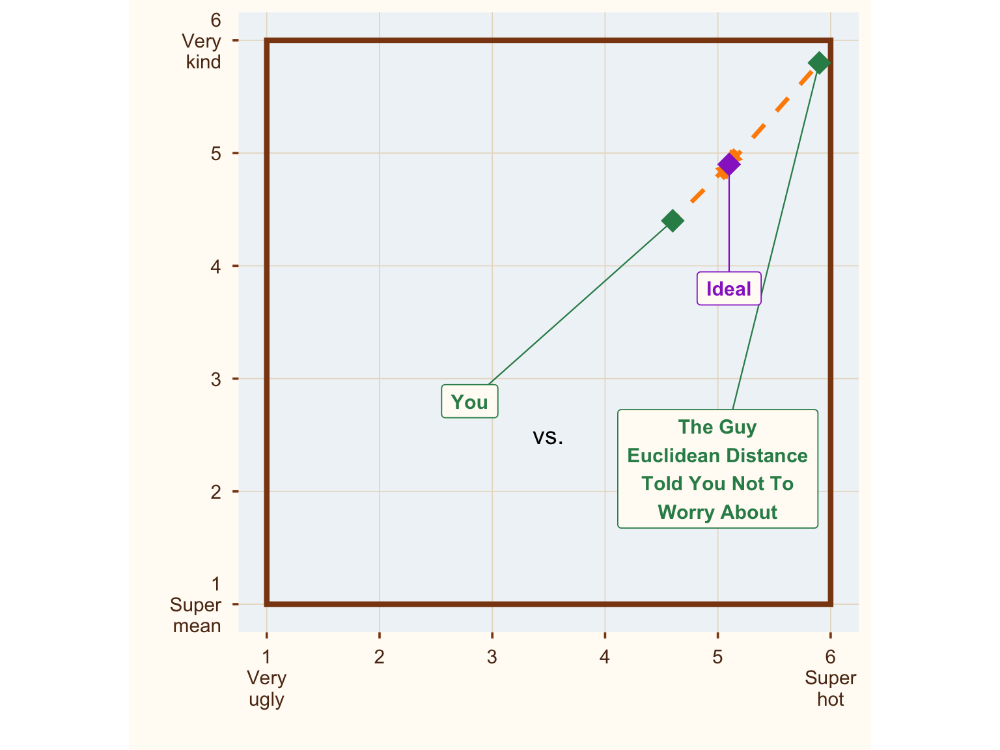

Romance could be so simple if only we were two-dimensional. You just find the closest available partner and go for it. To find out who is closest, you might compute a distance measure. The Euclidean distance, which this post is about, is \[d(p,q) = \sqrt{(p_1-q_1)^2 + (p_2-q_2)^2}\] where 1 and 2 are the two dimensions and p and q are a 2D girl and a 2D boy.
set.seed(20191005)
space_data <- data.frame(
id = c("Boy A", "Boy B", "Girl A", "Girl B"),
x = c(2, 8, 4, 10),
y = c(3, 8, 4, 4),
type = c("boy", "boy", "girl", "girl")
)
pairs_simple <- data.frame(
x_start = c(2, 8),
y_start = c(3, 8),
x_end = c(4, 10),
y_end = c(4, 4)
)
ggplot() +
geom_segment(data = pairs_simple,
aes(x = x_start, y = y_start, xend = x_end, yend = y_end),
color = col_distance, linewidth = 1, linetype = "dashed") +
geom_point(data = space_data,
aes(x = x, y = y, shape = type, color = type),
size = 5, stroke = 1.5) +
geom_label_repel(data = space_data,
aes(x = x, y = y, label = id, color = type),
size = 4, fontface = "bold",
box.padding = 0.5, point.padding = 0.3,
fill = "#f0f4f8") +
scale_color_manual(values = c("boy" = col_boy, "girl" = col_girl)) +
scale_shape_manual(values = c("boy" = 15, "girl" = 17)) +
scale_x_continuous(limits = c(0, 12), expand = c(0, 0)) +
scale_y_continuous(limits = c(0, 10), expand = c(0, 0)) +
labs(x = "← West · · · East →",
y = "← South · · · North →") +
coord_fixed(ratio = 1) +
theme_space
Figure 1: Romance in 2D world is simple. Boy A and Girl A can hook up much more easily because they’re closer. They could apply the Pythagorean theorem or, you know, just look around.
In 2D-romance, Boy A and Girl A can hook up much more easily because they’re closer. They could apply the Pythagorean theorem or, you know, just look around.
Unfortunately, most of us aren’t two-dimensional and our dating decisions are correspondingly more complex. Although physical space plays a role in attraction, people also care about attractiveness, height, cooking skills, personality, interests and so on. To analyze this decision problem, psychologists have projected these different traits and ideals into a multi-dimensional Euclidean space. The Euclidean distance then quantifies how close two points are in this space. Bob from accounting and your ideal partner. The new neighbour and your partner’s ideal partner. That random guy across the street and your ideal partner. The contact saved as ‘Dentist’ and your ideal partner. The barista who ‘accidentally’ draws a heart in the foam of your partner’s latte and your partner’s ideal partner.
Let’s stay in 2D for now to keep it simple to visualize:
set.seed(42)
space_data <- data.frame(
id = c("Boy A", "Boy B", "Girl A's ideal boy"),
x = c(110, 90, 120),
y = c(192, 170, 190),
type = c("boy", "boy", "ideal boy")
)
pairs_simple <- data.frame(
x_start = c(110, 90),
y_start = c(192, 170),
x_end = c(120, 120),
y_end = c(190, 190)
)
ggplot() +
geom_segment(data = pairs_simple,
aes(x = x_start, y = y_start, xend = x_end, yend = y_end),
color = col_distance, linewidth = 1, linetype = "dashed") +
geom_point(data = space_data,
aes(x = x, y = y, shape = type, color = type),
size = 5, stroke = 1.5) +
geom_label_repel(data = space_data,
aes(x = x, y = y, label = id, color = type),
size = 4, fontface = "bold",
box.padding = 0.5, point.padding = 0.3,
fill = "#f0f4f8") +
scale_color_manual(values = c("boy" = col_boy, "ideal boy" = col_ideal)) +
scale_shape_manual(values = c("boy" = 15, "ideal boy" = 18)) +
scale_x_continuous(limits = c(70, 130), expand = c(0, 0)) +
scale_y_continuous(limits = c(150, 225), expand = c(0, 0)) +
labs(x = "Cooking skill",
y = "Height (cm)") +
theme_space +
theme(axis.ticks = element_line(),
axis.text = element_text()
)
Figure 2: Two actual boys measured on two traits and Girl A’s ideal boy in terms of these traits
Boy A is closer to Girl A’s ideal, so we would not be surprised if she picked him over boy B.
Now, from a purely statistical perspective, this may work reasonably well for height and cooking skills. However, the problem with psychologists is that they want to apply this to psychological traits. And psychological traits are not measured using a ruler1; they are usually measured on questionnaire rating scales.
So, while our dream partner is limited only by our imagination, questionnaires tend to impose more prosaic additional limits. For example, studies in this area often use dimensions such as kindness and attractiveness, and the corresponding questions (“How hot would you like your ideal partner?”) are answered from a set of options, e.g. from “very ugly (1)” to “super hot (6)”. These are called Likert scales (“never rarely sometimes always”2) and they are bounded. When studies ask about partner preferences or have people rate themselves or their partners, they frequently use such Likert scales.
So, those ideal boys and actual boys? After the data are in, they’re no longer in a space. They’re in a box.3
box_data <- data.frame(
id = c("Ideal", "Actual"),
x = c(5.5, 3.2),
y = c(5.7, 3.5),
type = c("ideal", "actual")
)
ggplot() +
geom_segment(aes(x = 3.2, y = 3.5, xend = 5.5, yend = 5.7),
color = col_distance, linewidth = 1.2, linetype = "dashed") +
annotate("rect", xmin = 1, xmax = 6, ymin = 1, ymax = 6,
fill = NA, color = "#8b4513", linewidth = 1.5) +
geom_point(data = box_data,
aes(x = x, y = y, color = type),
size = 6, shape = 18) +
geom_label_repel(data = box_data,
aes(x = x, y = y, label = id, color = type),
size = 4, fontface = "bold",
box.padding = 0.6, point.padding = 0.3,
fill = "#fffbf5") +
annotate("text", x = 4.1, y = 4.2, label = "distance",
color = col_distance, fontface = "italic", size = 3.5, angle = 40) +
scale_color_manual(values = c("ideal" = col_ideal, "actual" = col_actual)) +
scale_x_continuous(limits = c(1, 6), breaks = 1:6,
labels = c("1\nVery\nugly", "2", "3", "4", "5", "6\nSuper\nhot")) +
scale_y_continuous(limits = c(1, 6), breaks = 1:6,
labels = c("1\nSuper\nmean", "2", "3", "4", "5", "6\nVery\nkind")) +
labs(x = "", y = "") +
coord_fixed(ratio = 1) +
theme_box
Figure 3: Where are all the ideal boys? Hiding in the corner.
Now, here’s a thing that might not surprise you: Most people’s ideal partner is hot. And kind.4
If you are anything like me – my alter ego is ✨ ceiling effect boy ✨– data being stuck in a corner immediately raises a red flag. People ignore the bounds of their data at their peril.
https://x.com/rubenarslan/status/1632170569448685569
So, if we are looking at ideal boys and actual boys, location and distance are — what’s the word — confounded. Necessarily so, because they’re in a box. The farthest you can be from the corner of a box is the opposite corner. In other words, when everybody’s preference is in the top right corner of a box, our distance metric (how closely does this person match my preferences?) is pretty much just a noisy version of the location of actual boy, that is, distance turns simply into an (inverted) measure of how hot and kind the person is. The hotter and kinder the person, the closer they are to the ideal in the corner, and the lower the distance. Looking at the situation from the opposite corner of the box, when we find that an actual boy is far from ideal, we can be reasonably sure he is not very hot or kind.
n_people <- 40
ideals <- data.frame(
id = 1:n_people,
x = pmin(6, pmax(1, rnorm(n_people, mean = 5.3, sd = 0.6))),
y = pmin(6, pmax(1, rnorm(n_people, mean = 5.5, sd = 0.6))),
type = "ideal"
)
actuals <- data.frame(
id = 1:n_people,
x = pmin(6, pmax(1, rnorm(n_people, mean = 3.5, sd = 1.1))),
y = pmin(6, pmax(1, rnorm(n_people, mean = 3.8, sd = 1.0))),
type = "actual"
)
distances <- sqrt((actuals$x - ideals$x)^2 + (actuals$y - ideals$y)^2)
actuals$distance <- distances
actuals$actual_mean <- (actuals$x + actuals$y) / 2
subset_ids <- c(1, 5, 10, 15, 20, 25, 30, 35)
distance_segments <- data.frame(
x_start = actuals$x[subset_ids],
y_start = actuals$y[subset_ids],
x_end = ideals$x[subset_ids],
y_end = ideals$y[subset_ids]
)
p_box <- ggplot() +
annotate("rect", xmin = 1, xmax = 6, ymin = 1, ymax = 6,
fill = NA, color = "#8b4513", linewidth = 1.5) +
geom_segment(data = distance_segments,
aes(x = x_start, y = y_start, xend = x_end, yend = y_end),
color = col_distance, linewidth = 0.6, alpha = 0.7, linetype = "dashed") +
geom_point(data = actuals, aes(x = x, y = y),
color = col_actual, size = 3, alpha = 0.7, shape = 16) +
geom_point(data = ideals, aes(x = x, y = y),
color = col_ideal, size = 3, alpha = 0.7, shape = 18) +
scale_x_continuous(limits = c(1, 6), breaks = 1:6,
labels = c("1\nUgly", "2", "3", "4", "5", "6\nHot")) +
scale_y_continuous(limits = c(1, 6), breaks = 1:6,
labels = c("1\nMean", "2", "3", "4", "5", "6\nKind")) +
labs(title = "Ideals cluster at ceiling",
x = "", y = "") +
coord_fixed(ratio = 1) +
theme_box
p_cor <- ggplot(actuals, aes(x = actual_mean, y = distance)) +
annotate("rect", xmin = 1, xmax = 6, ymin = 0, ymax = sqrt((1 - 6)^2 + (1 - 6)^2),
fill = NA, color = "#8b4513", linewidth = 1.5) +
geom_point(color = col_actual, size = 3, alpha = 0.7) +
geom_smooth(method = "lm", color = col_distance, fill = col_distance,
alpha = 0.2, linewidth = 1.2) +
annotate("text", x = 2, y = 4.5,
label = paste0("r = ", round(cor(actuals$actual_mean, actuals$distance), 2)),
size = 5, fontface = "bold", color = col_distance) +
scale_x_continuous(limits = c(1, 6)) +
scale_y_continuous(limits = c(0, sqrt((1 - 6)^2 + (1 - 6)^2))) +
labs(title = "Distance = location in disguise",
x = "Mean actual trait level", y = "Euclidean distance ('mismatch')") +
theme_box +
theme(axis.text = element_text(color = "#5c3317"))
p_box + p_cor
Figure 4: When ideals cluster at the bounds of the scale, a distance measure is just a location measure in disguise
What this implies is that if we want to learn whether distance to the ideal causally influences relationship satisfaction, or who we date/marry/divorce, we should take care to adjust for location (i.e., how hot and kind our actual boy is). Because we already know that hotness and kindness have strong main effects on the desirability of a partner; if we want to establish that distance (or preferences or similarity) matters, it needs to do so beyond those simple facts of life.
Do researchers do that? Erm, not usually. There is some awareness of the problem that variance in ideals is lower than variance in traits (which it is; people tend to have fairly mainstream ideas about how they’d like their partners). But I’ve (re)analyzed multiple datasets where a significant prediction from Euclidean distance is completely absorbed when I simply adjust for actual traits (e.g., levels of hotness and kindness). So the more interesting stories – for example, that people pick partners that match their idiosyncratic preferences – can be reduced to much more mundane stories – for example, that people pick partners that are hot and kind.
In some cases, the reader would never know from the paper that these levels confound the central analysis. If readers are unaware of this problem, they would falsely accord idiosyncratic differences in preferences/partner ideals a greater causal role than they have.
But what if researchers (or practitioners) do not care about causal inference, but just want to predict matches?5 Then Euclidean distance would probably still be the wrong tool. I’ll give two reasons.
There are other reasons why Euclidean distance may not be the best way to quantify “distance” (or its opposite, similarity).
First, Euclidean distances are very rigid: We give each dimension the same weight and treat them as uncorrelated. So, physical attractiveness is given the same weight as Tetris skill or punctuality, or whatever else is included in its calculation. And if you include two items measuring punctuality, they’ll be weighted twice as much as physical attractiveness. Those are probably not the best weights for prediction.
It’s like telling 2D girl A that she’s best suited for 2D boy A because he’s closer when getting to him would mean scaling a mountainside while 2D boy B is in reach of a leisurely stroll. Yes, they’re 3D boys and girls now; they grow up so fast.
set.seed(20191005)
terrain_grid <- expand.grid(
x = seq(0, 12, length.out = 100),
y = seq(0, 10, length.out = 100)
)
# North is mountains, south is lowlands, with some ridges and valleys
terrain_grid$z <- terrain_grid$y +
1 * sin(terrain_grid$x * 0.8) * cos(terrain_grid$y * 0.3) +
1 * sin((terrain_grid$x + terrain_grid$y) * 0.3)
space_data <- data.frame(
id = c("Boy A", "Boy B", "Girl A", "Girl B"),
x = c(2, 7, 2.2, 9),
y = c(3, 8, 6, 2),
type = c("boy", "boy", "girl", "girl")
)
pairs_simple <- data.frame(
x_start = c(2, 7),
y_start = c(3, 8),
x_end = c(2.2, 9),
y_end = c(6, 2)
)
ggplot() +
geom_contour(data = terrain_grid, aes(x = x, y = y, z = z),
color = "#8B7355", linewidth = 0.4, alpha = 0.6,
bins = 10) +
geom_segment(data = pairs_simple,
aes(x = x_start, y = y_start, xend = x_end, yend = y_end),
color = col_distance, linewidth = 1, linetype = "dashed",
arrow = arrow(length = unit(0.3, "cm"), type = "closed")) +
geom_point(data = space_data,
aes(x = x, y = y, shape = type, color = type),
size = 5, stroke = 1.5) +
geom_label_repel(data = space_data,
aes(x = x, y = y, label = id, color = type),
size = 4, fontface = "bold",
box.padding = 0.5, point.padding = 0.3,
fill = "#f0f4f8") +
scale_color_manual(values = c("boy" = col_boy, "girl" = col_girl)) +
scale_shape_manual(values = c("boy" = 15, "girl" = 17)) +
scale_x_continuous(limits = c(0, 12), expand = c(0, 0)) +
scale_y_continuous(limits = c(0, 10), expand = c(0, 0)) +
labs(x = "← West · · · East →",
y = "← South · · · North →") +
coord_fixed(ratio = 1) +
theme_space
Figure 5: Boy A may be closer, but boy B sure seems more convenient.
I know this girl who’d be perfect for you. Just 100 meters from you (up a vertical mountain cliff).
Second, if someone scores higher than your ideal on some dimensions, the Euclidean distance counts that against them. This might be plausible for a few traits like religiousness, where some prefer low and others prefer high levels. But it seems less plausible for physical attractiveness or kindness, where most would happily take “more” as a nice bonus. Or at least we haven’t heard of anybody complaining that their date turned out to be hotter than their Tinder profile suggested.6
box_data <- data.frame(
id = c("Ideal", "You", "The Guy\nEuclidean Distance\nTold You Not To\nWorry About"),
x = c(5.1, 4.6, 5.9),
y = c(4.9, 4.4, 5.8),
type = c("ideal", "actual", "actual"),
# manual label positions
lx = c(5.1, 2.8, 5),
ly = c(3.8, 2.8, 2.2)
)
ggplot() +
geom_segment(aes(x = 5.1, y = 4.9, xend = 4.6, yend = 4.4),
color = col_distance, linewidth = 1.2, linetype = "dashed",
arrow = arrow(length = unit(0.3, "cm"), type = "closed", ends = "first")) +
geom_segment(aes(x = 5.1, y = 4.9, xend = 5.9, yend = 5.8),
color = col_distance, linewidth = 1.2, linetype = "dashed",
arrow = arrow(length = unit(0.3, "cm"), type = "closed", ends = "first")) +
annotate("rect", xmin = 1, xmax = 6, ymin = 1, ymax = 6,
fill = NA, color = "#8b4513", linewidth = 1.5) +
annotate("text", x = 3.5, y = 2.5, label = "vs.") +
# connector lines from labels to points
geom_segment(data = box_data,
aes(x = lx, y = ly, xend = x, yend = y, color = type),
linewidth = 0.4) +
geom_point(data = box_data,
aes(x = x, y = y, color = type),
size = 6, shape = 18) +
geom_label(data = box_data,
aes(x = lx, y = ly, label = id, color = type),
size = 4, fontface = "bold",
fill = "#fffbf5", label.padding = unit(0.4, "lines")) +
scale_color_manual(values = c("ideal" = col_ideal, "actual" = col_actual)) +
scale_x_continuous(limits = c(1, 6), breaks = 1:6,
labels = c("1\nVery\nugly", "2", "3", "4", "5", "6\nSuper\nhot")) +
scale_y_continuous(limits = c(1, 6), breaks = 1:6,
labels = c("1\nSuper\nmean", "2", "3", "4", "5", "6\nVery\nkind")) +
labs(x = "", y = "") +
coord_fixed(ratio = 1) +
theme_box
Figure 6: Where are all the ideal boys? Hiding in the corner.
So, do we have a way to figure out the right weights and not punish partners for being too good? Yes, it’s called regression. Compare a model with just the traits of the partner to a model with traits + discrepancies or (linearly equivalent) traits + ideals. As long as you rein in overfitting, this is a workable technique to find out whether distance matters.
What do researchers do? I don’t read all literatures that use Euclidean distance, but in the partner preference literature, some have switched to distinctive profile correlations/the corrected pattern metric. Those ostensibly solve the issue that normatively desirable people are always closer to the ideal in preference space, but they have a different problem, which will be the subject of my next post. Some researchers, especially in personality psychology, also go for response surface analysis. This adequately controls for confounding but the data requirements to do this for a large number of traits are onerous, and as I might discuss in a future post, there is a good reason not to examine outcomes like relationship satisfaction trait-by-trait.
they are also not measured in CQ=Cooking Quotient points, I’m afraid I made those up.↩︎
or even more popular but less evocative “strongly disagree, disagree, neither disagree nor agree, agree, strongly agree”↩︎
Yeah, yeah, a box is a kind of space, but like a banana is a kind of berry.↩︎
And smart. And funny. And so on. If we consider this problem in more than two-dimensional space, it’s harder to visualize. But just like you can be in the top right corner of a 2D box, you can be in the corner of a hypercube.↩︎
Let’s assume counterfactually they’re not misleading themselves about this, even if they loudly proclaim “I did not have causal relations with that variable”, because IMO generalizing from the sample to new data always involves some key causal assumptions.↩︎
Or helped more poor children than their profile picture suggested.↩︎